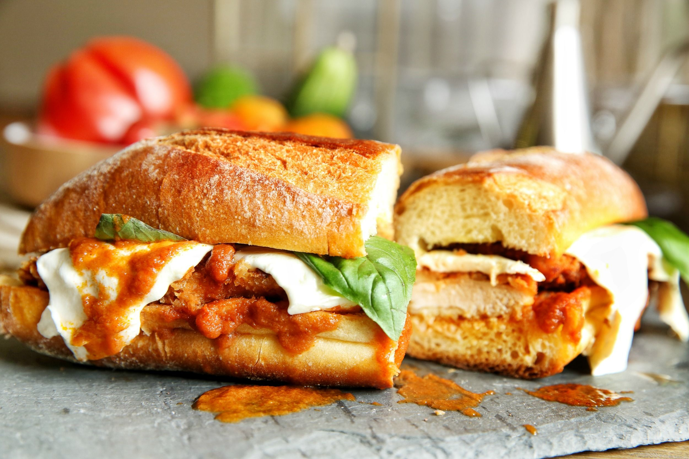

Lazy Man's Chicken Parm Sub

Description
Are you too lazy to pick up takeout? Well, have no fear, Lazy Man's Chicken Parm Sub is here! This recipe is so easy, you'll have a hot and delicious meal in the time it takes to wait for delivery. Serve it up with a side of sass and a green salad.
Ingredients
- Cooking spray (because we're fancy like that)
- 4 frozen breaded chicken breast fillets (we're not here to judge)
- ½ cup freshly grated Parmesan cheese (feel free to eyeball it, we won't tell)
- 1 (16 ounce) package frozen garlic bread, thawed (because who has time to make it from scratch?)
- 1 cup tomato sauce or marinara sauce (whatever's in the fridge)
- 4 slices provolone cheese (or any cheese you have lying around)
- 12 fresh basil leaves, or to taste (or just skip it, who's counting?)
- Aluminum foil (to keep the laziness contained)
Steps
- Preheat the oven to 425 degrees F (220 degrees C). Spray a baking pan with cooking spray (fancy, right?).
- Place frozen chicken fillets on the prepared pan and bake for 10 to 12 minutes. Turn chicken, sprinkle 2 tablespoons Parmesan cheese on each fillet, and bake until crispy, an additional 10 to 12 minutes (because crispy is the only way to go).
- Slice garlic bread into 4 equal portions. Open each portion and place garlic side up on a baking sheet. Warm garlic bread in the oven about 5 minutes (or until you remember it's in there).
- To assemble the sandwiches, place a chicken fillet on a piece of garlic bread, spoon 1/4 cup tomato sauce or marinara sauce on top of the chicken, and lay a slice of provolone on top of the sauce. Place 3 basil leaves, or more to taste, on each sandwich, and top with the other half (because presentation is everything).
- Wrap each sandwich in foil and return to the oven until the cheese is melted, 5 to 8 minutes. Unwrap and serve warm (and pretend like you put in a lot of effort).